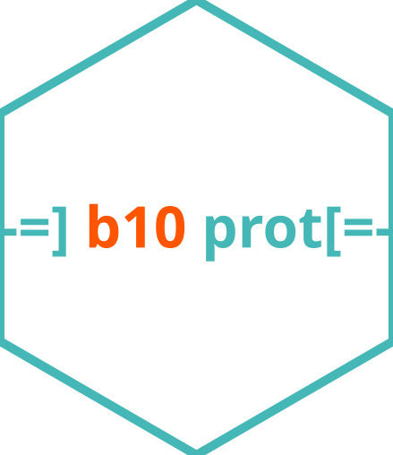

Target-Decoy Approach for FDR Estimation
target_decoy_approach.RdThis function applies the Target-Decoy Approach (TDA) to estimate the False Discovery Rate (FDR) based on a scoring metric for the potential identifications. It calculates the p-value, local confidence score (LP), and q-value (FDR) for each identification.
Arguments
- data
A data frame containing the identification data. It must include a logical column
isDecoyindicating whether each row corresponds to a decoy identification.- score
The column name of the score used to rank identifications. This should be an unquoted column name.
- lower_better
A logical value indicating whether lower scores are better (default is
TRUE).- unbiased
When set to
TRUE, one is added to the decoy and target counts before FDR calculation. This adjustment can reduce bias in small datasets.
Value
A data frame with the original data and additional columns:
- decoys
The cumulative number of decoys up to each identification.
- targets
The cumulative number of targets up to each identification.
- pval
The p-value estimated using the target-decoy approach.
- LP
The local confidence score, computed using the
colog()function.- FDR
The false discovery rate (FDR) for each score threshold.
- qval
The cumulative minimum FDR (q-value).
Examples
# Example usage with a sample dataset
sample_data <- data.frame(
score = c(0.01, 0.02, 0.03, 0.04, 0.04, 0.05, 0.06, 0.07),
isDecoy = c(FALSE, FALSE, FALSE, TRUE, FALSE, FALSE, FALSE, TRUE)
)
target_decoy_approach(sample_data, score, lower_better = TRUE)
#> # A tibble: 8 × 9
#> score isDecoy decoys targets target pval LP FDR qval
#> <dbl> <lgl> <int> <int> <int> <dbl> <dbl> <dbl> <dbl>
#> 1 0.01 FALSE 0 1 1 0.25 0.602 0 0
#> 2 0.02 FALSE 0 2 2 0.25 0.602 0 0
#> 3 0.03 FALSE 0 3 3 0.25 0.602 0 0
#> 4 0.04 TRUE 1 4 3 0.25 0.602 0.25 0.167
#> 5 0.04 FALSE 1 4 4 0.75 0.125 0.25 0.167
#> 6 0.05 FALSE 1 5 5 0.75 0.125 0.2 0.167
#> 7 0.06 FALSE 1 6 6 0.75 0.125 0.167 0.167
#> 8 0.07 TRUE 2 6 6 0.75 0.125 0.333 0.333